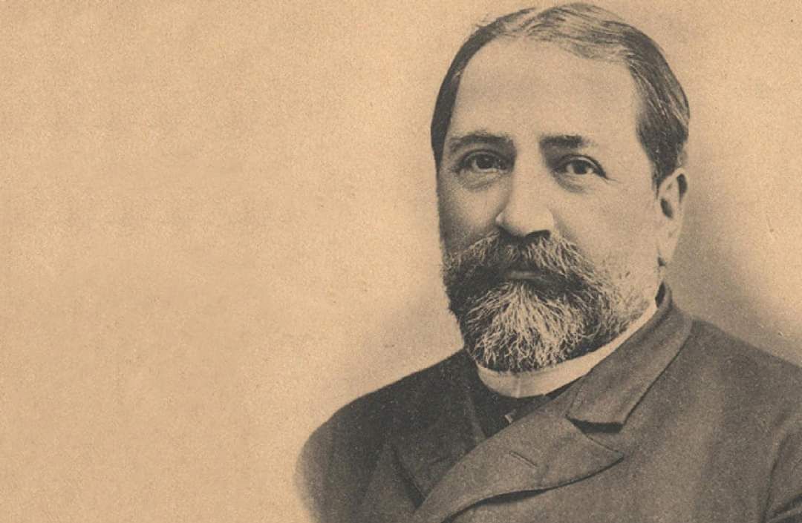

Basic Information
Ilia Chavchavadze was a Georgian writer, poet, and public leader who shaped modern Georgian culture and national identity, championing literature, education, and the preservation of his country’s heritage.
- ocupation:Ilia Chavchavadze’s occupation can be described as a writer, poet, journalist, and public intellectual. He worked to advance Georgian literature, promote education, lead social and political reforms, and preserve national identity, combining literary work with active civic and cultural leadership.
- fun facts
- other stuff
